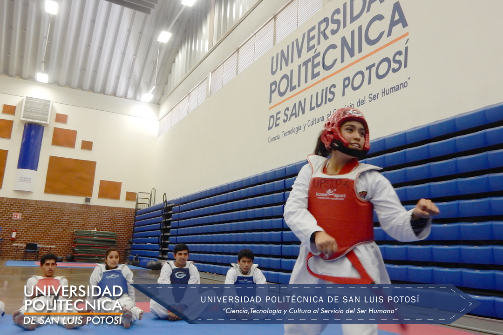
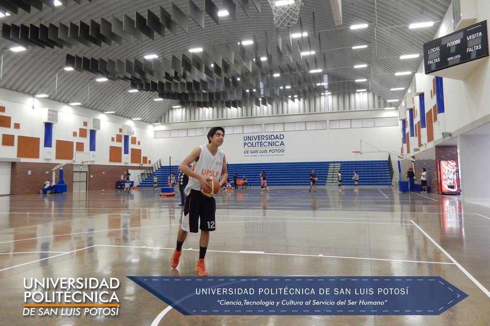
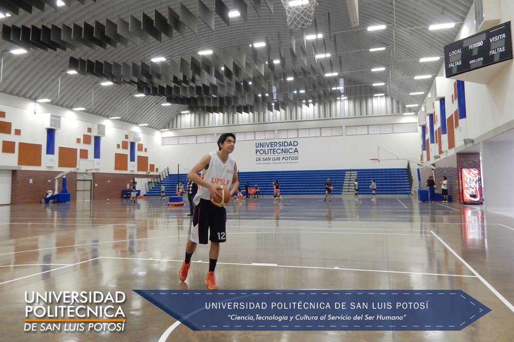
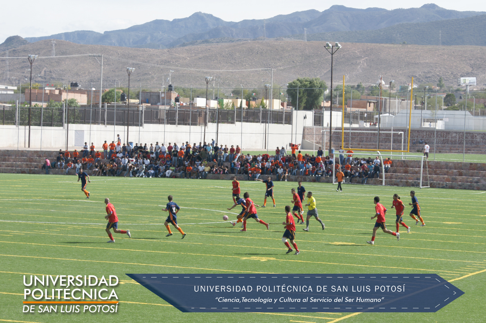
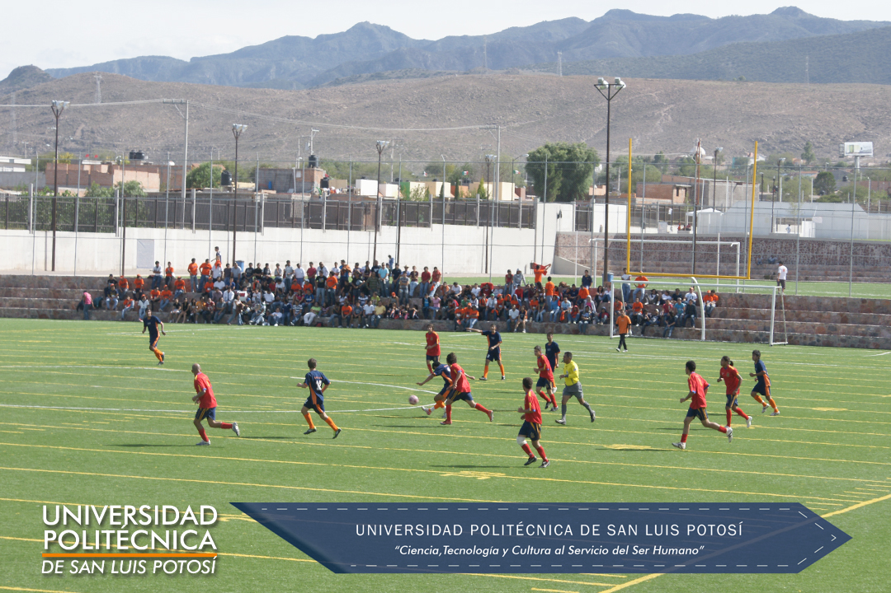
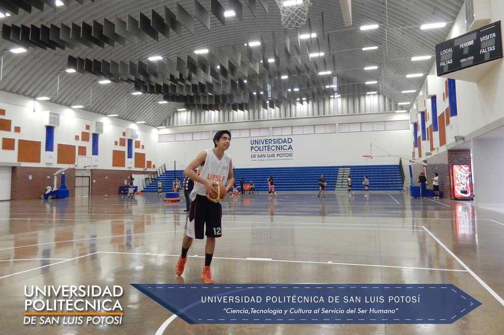
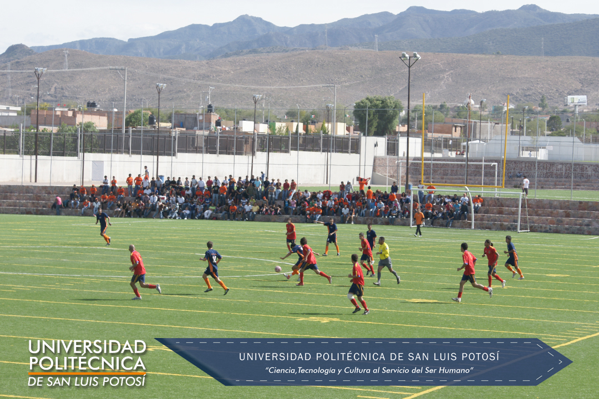
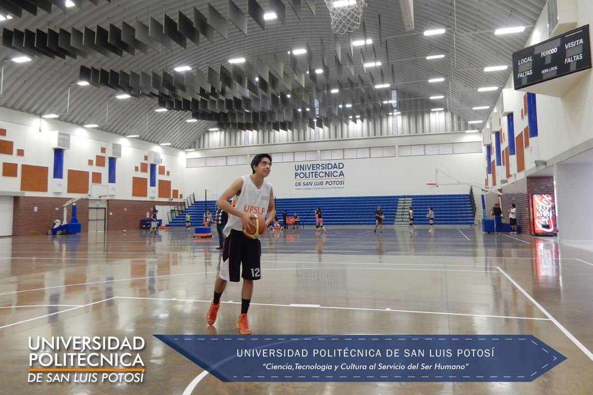
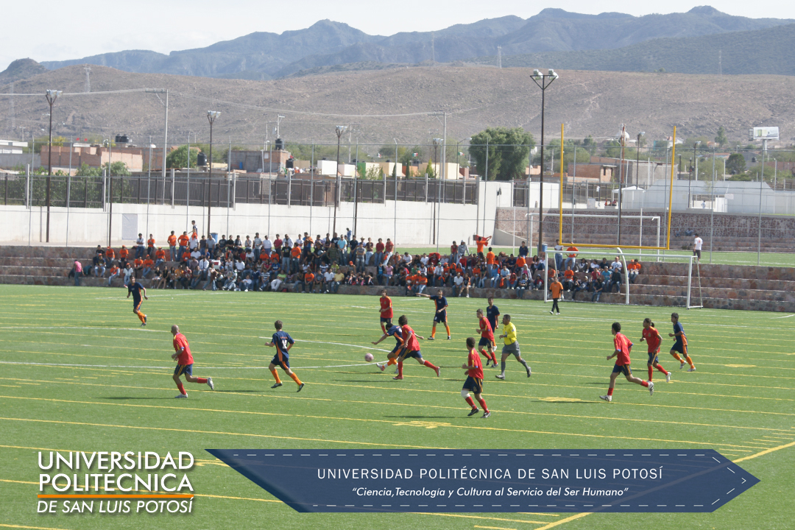

 

 




La Universidad Politécnica de San Luis Potosí esta comprometida en el desarrollo personal y profesional exitoso del estudiante, impulso para la formación integral y humana, actividades deportivas y culturales que complementen la formación académica del estudiante.
Ser parte activa en el cumplimiento del compromiso de nuestra universidad con excelencia en la formación integral y humana, desarrollando y aplicando nuevos conocimientos; mediante un programa de actividades deportivas incluyente y diversificado que permita a los estudiantes equilibrar su desarrollo académico, que provea de experiencias y valores que coadyuven a su madurez y calidad profesional, mismas que consistirán en un sello distintivo de su paso por la universidad politécnica.
Las disciplinas que actualmente se ofrecen son:


Recientemente tuvimos la participación de nuestra universidad en la etapa estatal de la universiada 2015 con los siguientes equipos:
Con una destaca participación de los equipos de futbol rápido femenil, taekwondo, triatlón y tenis logrando el pase a la etapa regional.
Los equipos de futbol soccer varonil, futbol rápido femenil, basquetbol varonil y voleibol femenil actualmente se preparan para participar en el torneo nacional de Universidades Politécnicas que se llevara a cabo en la ciudad de Mazatlán Sinaloa los días 17 al 22 de marzo de 2015.